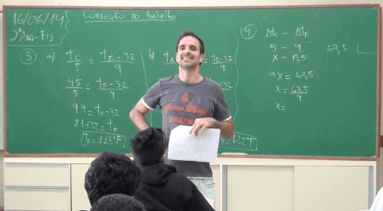

Problemas com filho viciado em videogames
Meu nome é Fabiano Marques, tenho 42 anos e moro em São Paulo. Sou um leitor assíduo da revista e durante a leitura da última edição fiquei muito interessado no tema da reportagem “Pais e filhos”, já que tenho me encontrado em uma relação um tanto quanto conturbada com meu filho mais novo.
Leia Mais

Amigo metido à professor
Não, folha de palmeira não, quero dizer, a interjeição... Como escreve-se, digo, como se escreve mesmo? Eu não lembro, isso está me deixando louco...
Leia MaisUm Breve pensamento sobre a vida
Venho escrever esse texto pois preciso de uma opinião sincera de seus editores, como uma revista, escrevem diversos artigos por dia, isso realmente vale a pena para vocês? A vida realmente vale a pena pra vocês?
Leia Mais